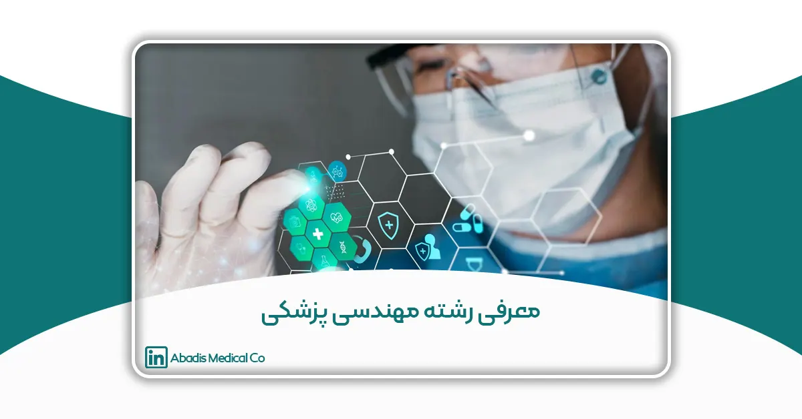
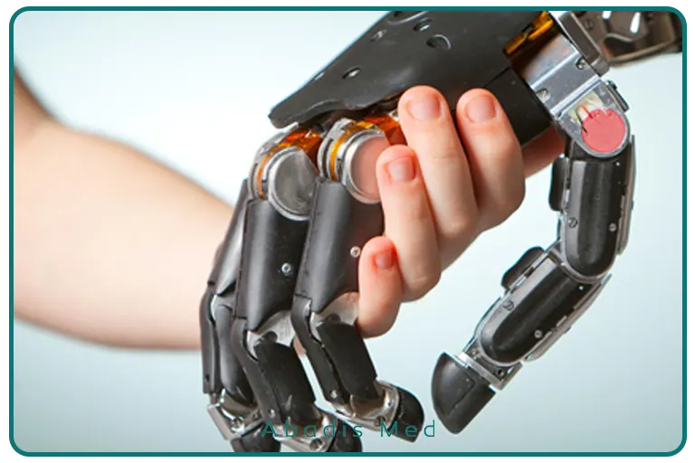
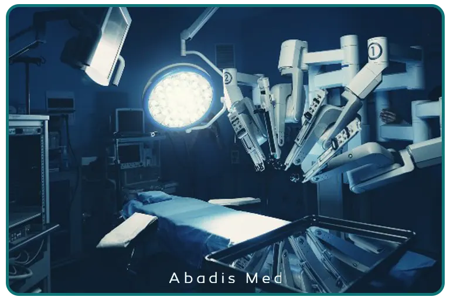

چکیده
رشته مهندسی پزشکی یکی از مهمترین حوزههای میانرشتهای است که ترکیبی از علوم مهندسی و پزشکی را برای توسعه فناوریهای مرتبط با سلامت به کار میگیرد. این رشته با بهرهگیری از اصول فیزیک، ریاضیات، الکترونیک، مکانیک و علوم زیستی، نقش مهمی در تولید و بهبود تجهیزات پزشکی دارد. هدف اصلی این رشته، ارتقای کیفیت مراقبتهای پزشکی، افزایش دقت تشخیص بیماریها و بهینهسازی روشهای درمانی است.
در این مقاله، به معرفی کامل مهندسی پزشکی، تعداد واحدهای درسی، مقاطع تحصیلی، گرایشها، دانشگاههای ارائهدهنده، بازار کار و فرصتهای شغلی پرداخته میشود. همچنین، شرایط پذیرش در دانشگاههای معتبر داخلی و خارجی بررسی خواهد شد. علاوه بر این، مهارتهای موردنیاز برای موفقیت در این رشته نیز مورد بحث قرار خواهد گرفت. در نهایت، نگاهی به آینده این رشته و پیشبینیهای مرتبط با آن خواهیم داشت.
مقدمه
مهندسی پزشکی یکی از مهمترین رشتههای مهندسی است که به توسعه، طراحی، تولید و نگهداری تجهیزات پزشکی و فناوریهای مرتبط با سلامت میپردازد. این رشته به دلیل ارتباط تنگاتنگ با علم پزشکی، مستلزم درک عمیقی از مفاهیم زیستشناسی، فیزیک، ریاضیات و مهندسی است.
با پیشرفت علم و فناوری، نقش مهندسان پزشکی در بهبود کیفیت زندگی بیماران، کاهش خطای انسانی در تشخیص بیماریها و افزایش دقت در درمان بسیار پررنگ شده است. تجهیزات پیشرفتهای مانند دستگاههای تصویربرداری پزشکی، پروتزهای هوشمند، سیستمهای مانیتورینگ بیماران و روباتهای جراحی از جمله دستاوردهای این رشته هستند.
اهمیت رشته مهندسی پزشکی در دنیای امروز
رشد سریع فناوریهای پزشکی و نیاز به دستگاههای دقیق و پیشرفته، این رشته را به یکی از حیاتیترین زمینههای علمی تبدیل کرده است. برخی از کاربردهای حیاتی این رشته شامل:
- افزایش دقت در تشخیص بیماریها: تصویربرداری پزشکی با کمک MRI، سیتیاسکن و سونوگرافی.
- بهبود روشهای درمانی: طراحی تجهیزات پیشرفته جراحی و سیستمهای کنترل از راه دور.
- توسعه دستگاههای کمکی: ساخت پروتزهای هوشمند و ویلچرهای روباتیک.
- مانیتورینگ بیماران: طراحی دستگاههای پوشیدنی که وضعیت بیماران را کنترل میکنند.
مقاطع تحصیلی و تعداد واحدهای درسی
مقطع کارشناسی
در ایران، دوره کارشناسی مهندسی پزشکی چهار سال طول میکشد و دانشجویان باید ۱۴۰ واحد درسی را بگذرانند که شامل موارد زیر است:
- دروس عمومی: ۲۰ واحد (شامل دروس فرهنگی، اجتماعی و زبانهای خارجی)
- دروس پایه: ۲۶ واحد (ریاضیات، فیزیک، شیمی، زیستشناسی، برنامهنویسی)
- دروس اصلی: ۴۷ واحد (مدارهای الکتریکی، الکترونیک، آناتومی و فیزیولوژی، سیگنالها و سیستمها، پردازش تصویر، بیومکانیک و غیره)
- دروس تخصصی: ۴۷ واحد (بیوالکتریک، بیومکانیک، بیومتریال، سیستمهای پزشکی و غیره)
مقطع کارشناسی ارشددر مقطع کارشناسی ارشد، دانشجویان میتوانند در گرایشهای مختلف ادامه تحصیل دهند. دوره کارشناسی ارشد معمولاً دو سال طول میکشد و شامل حدود ۳۲ واحد درسی است که شامل دروس تخصصی، سمینار و پایاننامه میشود. دانشجویان باید تحقیقات پیشرفتهای در حوزههای مرتبط انجام دهند.
مقطع دکتری
دوره دکتری مهندسی پزشکی بیشتر بر پژوهش و تحقیق متمرکز است و شامل گذراندن تعدادی واحد آموزشی، آزمون جامع و انجام پایاننامه دکتری است. این مقطع معمولاً بین ۴ تا ۶ سال طول میکشد و نیازمند ارائه مقالات علمی و شرکت در پروژههای تحقیقاتی بینالمللی است.

گرایشهای مهندسی پزشکی
رشته مهندسی پزشکی دارای چندین گرایش تخصصی است که هر کدام کاربردهای خاص خود را دارند:
- بیوالکتریک: بررسی سیستمهای پردازش سیگنالهای زیستی، طراحی دستگاههای پزشکی الکترونیکی مانند MRI، CT-Scan و تجهیزات مانیتورینگ پزشکی.
- بیومکانیک: تحلیل نیروهای مکانیکی در بدن انسان، طراحی و ساخت اندامهای مصنوعی و تجهیزات ارتوپدی.
- بیومتریال: توسعه مواد زیستسازگار برای کاربردهای پزشکی مانند پروتزها، ایمپلنتها و بافتهای مصنوعی.
- مهندسی بافت: تحقیق در زمینه رشد سلولها و تولید اندامهای مصنوعی.
- مهندسی توانبخشی: طراحی و تولید وسایل کمکی برای افراد دارای معلولیت و توسعه سیستمهای حرکتی هوشمند.
دانشگاههای ارائهدهنده رشته مهندسی پزشکی در ایران
رشته مهندسی پزشکی در بسیاری از دانشگاههای معتبر ایران ارائه میشود، از جمله:
- دانشگاه صنعتی امیرکبیر (تهران)
- دانشگاه شهید بهشتی (تهران)
- دانشگاه اصفهان
- دانشگاه تبریز
- دانشگاه صنعتی سهند
- دانشگاه شاهد (تهران)
- دانشگاه صنعتی همدان
- دانشگاه غیرانتفاعی شیخ بهایی (اصفهان)
بازار کار و فرصتهای شغلی
زمینههای شغلی مهندسی پزشکی
فارغالتحصیلان مهندسی پزشکی میتوانند در حوزههای زیر فعالیت کنند:
- طراحی و تولید تجهیزات پزشکی
- نگهداری و تعمیر دستگاههای پزشکی در بیمارستانها
- کار در شرکتهای تولیدکننده تجهیزات پزشکی
- تحقیق و توسعه در فناوریهای پزشکی
- مشاوره برای تجهیز بیمارستانها و مراکز درمانی
کشورهای پیشرو در بازار کار مهندسی پزشکی
- آمریکا: درآمد سالانه مهندسان پزشکی بین ۸۰,۰۰۰ تا ۱۲۰,۰۰۰ دلار است.
- آلمان: بازار کار قوی برای متخصصان مهندسی پزشکی با تمرکز بر تحقیق و توسعه
- کانادا و استرالیا: فرصتهای شغلی بالا در حوزه تجهیزات پزشکی و روباتیک پزشکی
دانشگاههای برتر جهان در رشته مهندسی پزشکی
برخی از دانشگاههای معتبر جهانی که در این حوزه پیشرو هستند عبارتاند از:
- مؤسسه فناوری ماساچوست (MIT) – آمریکا
- دانشگاه جانز هاپکینز – آمریکا
- دانشگاه فنی مونیخ – آلمان
- دانشگاه آکسفورد – انگلستان
- امپریال کالج لندن – انگلستان
- دانشگاه ملی سنگاپور (NUS) – سنگاپور
- دانشگاه تسینگهوا – چین
شرایط پذیرش در دانشگاههای آلمان
تحصیل در رشته مهندسی پزشکی در آلمان به شرایط زیر نیاز دارد:
- کارشناسی:
- گذراندن دوره کالج و آزمون ورودی T-Course یا داشتن حداقل ۳۵ واحد مرتبط در دانشگاههای ایران
- مدرک زبان آلمانی (حداقل B1)
- کارشناسی ارشد:
- مدرک لیسانس مرتبط
- مدرک زبان انگلیسی (آیلتس ۶.۵) یا آلمانی
- دکتری:
- معدل بالا در مقاطع قبلی
- مدرک زبان انگلیسی (آیلتس ۷) و مدرک زبان آلمانی
همچنین، ارائه مدارکی مانند توصیهنامه، انگیزهنامه، گذرنامه، بیمه درمانی و اثبات تمکن مالی برای دریافت ویزا ضروری است.

مهارتهای موردنیاز برای موفقیت در مهندسی پزشکی
۱. مهارتهای فنی و مهندسی
- آشنایی با اصول الکترونیک و مکانیک
- برنامهنویسی و استفاده از نرمافزارهای مهندسی (MATLAB، Python، LabVIEW)
- پردازش سیگنال و تصویر پزشکی
۲. مهارتهای علمی و تحلیلی
- درک عمیق از زیستشناسی و فیزیولوژی انسان
- تحلیل دادههای پزشکی و آماری
- حل مسئله و تفکر خلاقانه
۳. مهارتهای ارتباطی و مدیریتی
- توانایی کار تیمی و مدیریت پروژه
- ارتباط مؤثر با پزشکان و متخصصان پزشکی
- مستندسازی و ارائه گزارشهای فنی
۴. مهارتهای تحقیقاتی و نوآوری
- تحقیق و توسعه (R&D) در فناوریهای پزشکی
- آشنایی با استانداردها و مقررات تجهیزات پزشکی
- نوآوری و کارآفرینی در حوزه سلامت
۵. مهارتهای نرم و فردی
- مدیریت زمان و اولویتبندی وظایف
- یادگیری مداوم و بهروز ماندن در حوزه فناوریهای پزشکی
پیشرفتهای اخیر در مهندسی پزشکی
رشته مهندسی پزشکی به سرعت در حال پیشرفت است و همگام با تحولات فناوریهای نوین، دنیای پزشکی و مهندسی را متحول کرده است. در این بخش به برخی از جدیدترین پیشرفتها در این حوزه اشاره میشود که اهمیت ویژهای دارند:
1. کاربرد هوش مصنوعی در مهندسی پزشکی
یکی از پیشرفتهای برجسته در مهندسی پزشکی استفاده از هوش مصنوعی (AI) برای تحلیل دادههای پزشکی و بهبود فرآیندهای درمانی است. سیستمهای هوش مصنوعی قادرند تصاویر پزشکی را با دقت بالا تحلیل کنند و به پزشکان کمک کنند تا تشخیصهای دقیقتری بدهند؛ این فناوری در دستگاههای تصویربرداری پزشکی مانند CT اسکن، MRI و رادیوگرافی دیجیتال به کار میرود.
استفاده از الگوریتمهای یادگیری عمیق (Deep Learning) به سیستمهای تشخیص بیماری مانند سرطان، بیماریهای قلبی و مغزی کمک میکند. در آیندهای نزدیک، هوش مصنوعی میتواند به عنوان یک مشاور دیجیتال در فرآیند درمان بیماران عمل کند.
2. چاپ سهبعدی در پزشکی
چاپ سهبعدی (3D printing) در زمینههای مختلف مهندسی پزشکی مانند ساخت پروتزها، اندامهای مصنوعی، بافتهای بیولوژیکی و حتی ارگانهای مصنوعی کاربرد پیدا کرده است. استفاده از این فناوری به پزشکان این امکان را میدهد که مدلهای دقیقی از ارگانها و بافتها بسازند و درمانهای فردی را با دقت بیشتری انجام دهند.
چاپ سهبعدی به پزشکان کمک میکند تا پروتزها و ایمپلنتهای سفارشی برای هر بیمار بسازند. علاوه بر این، چاپ بافتهای زیستی در مراحل اولیه درمان بیماریهای مزمن و آسیبهای بافتی به پزشکان کمک خواهد کرد.
3. پزشکی از راه دور و پایش سلامت از راه دور
پزشکی از راه دور یا Telemedicine یک پیشرفت بزرگ در مهندسی پزشکی است که به کمک فناوریهای ارتباطی و دیجیتال، امکان ارائه مراقبتهای بهداشتی به بیماران از راه دور فراهم میآورد. این سیستمها به ویژه در مناطق دورافتاده که دسترسی به پزشک محدود است، اهمیت پیدا کردهاند.
پایش سلامت از راه دور با استفاده از دستگاههای پوشیدنی (wearables) مانند ساعتهای هوشمند و دستگاههای سنجش فشار خون و ضربان قلب به پزشکان این امکان را میدهد که به صورت مستمر وضعیت سلامت بیماران را بررسی کنند.
4. مهندسی بافت و سلولی
پیشرفتهای قابل توجهی در زمینه مهندسی بافت به وجود آمده است. محققان در حال تحقیق برای ساخت بافتهای زنده و اندامهای مصنوعی هستند که میتوانند جایگزین اندامهای آسیبدیده شوند. این زمینه از علم مهندسی پزشکی، با استفاده از فناوریهای جدید مانند سلولهای بنیادی و بیومواد، در تلاش است که روشهای درمانی برای بیماریهای مزمن، نقصهای مادرزادی و آسیبهای حاد را توسعه دهد.
5. سیستمهای روباتیک در جراحی
در سالهای اخیر، روباتهای جراحی به یکی از تحولات بزرگ در مهندسی پزشکی تبدیل شدهاند. این سیستمها به جراحان این امکان را میدهند که با دقت و کنترل بیشتر جراحیهایی انجام دهند که در گذشته امکانپذیر نبود یا بسیار پیچیده بود. روباتهای جراحی میتوانند در فرآیندهای جراحی دقیق مانند جراحیهای قلب، مغز و سرطان به جراح کمک کنند.
آینده رشته مهندسی پزشکی
با توجه به پیشرفتهای سریع در حوزه فناوریهای پزشکی، انتظار میرود که این رشته در آینده پیشرفتهای قابل توجهی داشته باشد. برخی از پیشبینیها عبارتاند از:
- هوش مصنوعی و یادگیری ماشین در پزشکی: کمک به تشخیص دقیقتر بیماریها
- توسعه پروتزهای بیونیک: امکان حرکت طبیعیتر برای افراد دارای قطع عضو
- پزشکی از راه دور و دستگاههای پوشیدنی: مانیتورینگ مستمر سلامت بیماران از راه دور
- چاپ سهبعدی اندامهای زیستی: امکان پیوند اندامهای تولیدشده در آزمایشگاه به بیماران
نتیجهگیری
مهندسی پزشکی یکی از رشتههای پرکاربرد و در حال رشد است که نقش مهمی در توسعه تجهیزات پزشکی و بهبود سیستمهای درمانی دارد. این رشته به دلیل ارتباط مستقیم با فناوریهای نوین، آینده روشنی دارد و بازار کار آن در کشورهای مختلف در حال گسترش است. دانشگاههای معتبر ایران و جهان فرصتهای خوبی را برای تحصیل در این رشته فراهم کردهاند و فارغالتحصیلان آن میتوانند در حوزههای متنوعی فعالیت کنند. با توجه به روند رو به رشد فناوریهای پزشکی، این رشته میتواند یکی از گزینههای مناسب برای علاقهمندان به علوم مهندسی و پزشکی باشد.